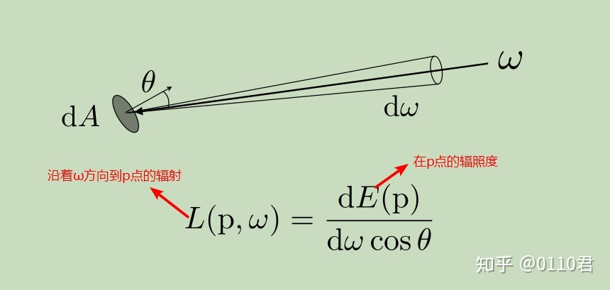
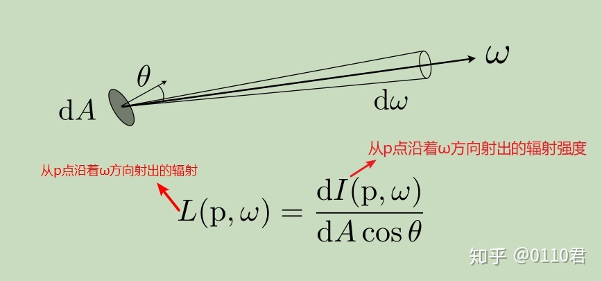

Radiometry
辐射度量学是基于物理的渲染（Physically Based Rendering）基础

Solid Angles

定义：球面上的投影面积与半径的平方之比

在球坐标系中，任意球面的微分面积为：
dA=(rsinθdϕ)(rdθ)=r2(sinθdθdϕ)
那么微分立体角就是
dω=r2dA=sinθdθdϕ
（A代表投影的面积)
对上式积分到整个球体
Ω=∫S2dω=∫02π∫0πsinθdθdϕ=4π
单位steradians（球面度，简写sr）
Radiant Flux(Power)
定义：单位时间释放(emitted)、反射(emitted)、透射(transmitted)或接受(received)的能量。单位是 W 或 lm
Φ=x→0limΔtΔQ=dtdQ
反过来，给定flux和时间，可以算出这段时间的总能量
Q=∫t0t1Φ(t)dt
（拿灯泡来说，就是灯泡有多亮）
Radiant Intensity

定义：辐射(发光)强度是单位立体角(solid angle)由点光源发出的功率(power)
I(ω)=dωdΦ
单位：srW(lm)=cd candela（坎德拉）
点光源任意方向上的Radiant Intensity等于I=4πΦ（因为球体的立体角是）
（灯泡一直在往四面八方发射能量，那某个方向上的能量就是Radiant Intensity）
Irradiance
定义：每(垂直/投影)单位面积入射到一个表面上一点的辐射通量(功率)。单位：lux，照度
E(x)=ΔA→0limΔAΔΦ(x)=dAdΦ(x)
只和面积有关
我们也可以通过irradiance和面积知道flux
Φ=∫AE(x)dA
（就是被灯泡照射的物体，它表面接收了多少能量）
Lambert Law

区域接收到的能量，和 入射光线 与 区域的法线方向 的夹角的余弦值成正比。
Irradiance方程也能帮助理解Lambert定律。
如果面积光和表面平行也就是A1=A，那么表面和面积光面积相等，Irradiance就等于flux除以面积
E1=AΦ
然而，如果面积光和表面有一个夹角，那么表面受到光照的面积会变大。面积大约为A2=cosθA。所以
E2=AΦcosθ
Irradiance Falloff

球的立体角是4π，带入公式，球面的Irradiance是E=4πr2Φ
可以得出结论，Irradiance传播过程中会衰减，和半径平方成正比
Radiance
定义：一个表面在每单位立体角、每单位投影面积上所发射(emitted)、反射(reflected)、透射(transmitted)或接收(received)的Radiant Flux。
（光线传播过程中度量它的属性）
L(p,ω)=Δω→0limΔωΔEω(p)=dωdEω(p)=dωdAcosθd2Φ(p,ω)
（单位：nit，srm2W）
（这里多出来的cosθ是在计算光线ω方向上的，投影的面积）
关系
Radiant Intensity：单位立体角的Radiant Flux
Irradiance：单位投影面积的Radiant Flux
Radiance：单位投影面积的Intensity
Radiance还可以是：单位立体角的Irradiance(单位立体角、单位投影面积的Radiant Flux)
（intensity和irradiance只微分一次，radiance微分两次）
Incident Radiance
指到达表面的单位立体角的Irradiance。即它是沿着给定光线到达表面的光(入射方向指向表面)
（就是考虑某个方向上，有多少光射到单位表面上）

Exiting Radiance
离开表面的单位投影面积的辐射强度。例如：对于面光(area light)，它是沿着给定光线发射的光(出射方向指向表面)
（就是一个单位表面往某个方向上发射了多少光）

总结
Irradiance：面积dA接收的总Radiant Flux
Radiance：在面积dA 、方向dω上接收的Radiant Flux
Radiance是在Irradiance上增加了方向性
可以根据以上这点，用一个式子将这两个量联系起来
dE(p,ω)=Li(p,ω)cosθdω
面积dA收到的irradiance，等于某个方向上的radiance（Li(p,ω)）乘以照射到面积上的能量（cosθdω）
整理一下（两边积分）
E(p)=∫H2Li(p,ω)cosθdω
就是每一个可能的方向（立体角）上，收到的能量求和

参考
辐射度量学 - 知乎
GAMES101-现代计算机图形学入门-闫令琪
硬核光线追踪开发—完全解析